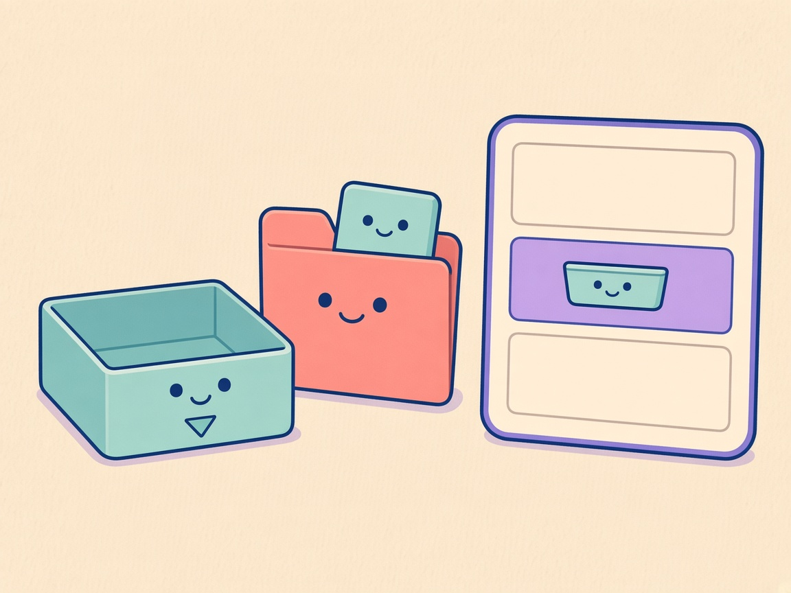
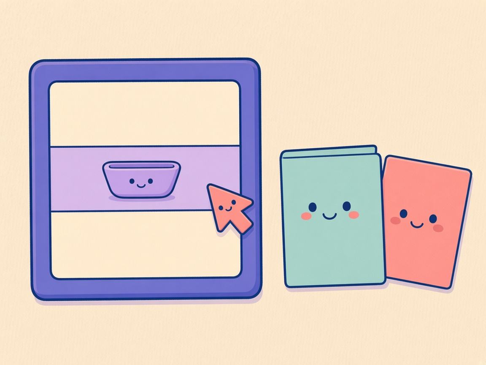
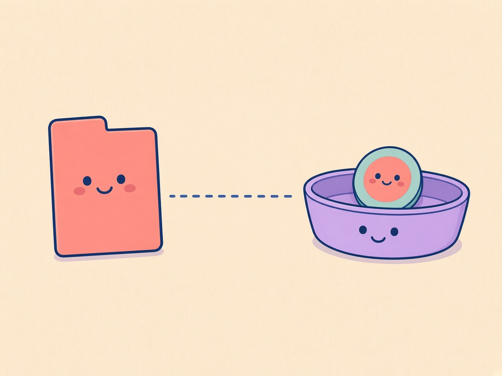

01 / Ordnermenü

Deutsch
Menü am Ordner
Schau ins Menü.
Downloads und angeheftete Ordner zeigen den Befehl auch für Inhalte.
English
Menu on the folder
Open the menu.
Downloads and pinned folders show the command for their contents too.
In Ablage legen / Add to Shelf. Review preview for 0.11.2.md. Art is shared. Copy is selectable. German left, English right. Google Fonts (Source Serif 4) are for this static file only. The native Update window does not load this stylesheet.

Menü am Ordner
Schau ins Menü.
Downloads und angeheftete Ordner zeigen den Befehl auch für Inhalte.
Menu on the folder
Open the menu.
Downloads and pinned folders show the command for their contents too.

In Ablage legen
Nur ein Verweis.
Wähle den Befehl für den Ordner oder eine Datei darin. Nichts wird verschoben oder kopiert.
Add to Shelf
Just a reference.
Choose it for the folder or a file inside. Nothing is moved or copied.

Der Verweis bleibt
Ich bleibe hier.
Auf der Ablage liegt ein Verweis. Die Datei bleibt an ihrem Ort.
The reference stays
I stay put.
A token sits on the Shelf. The file stays where it lives.